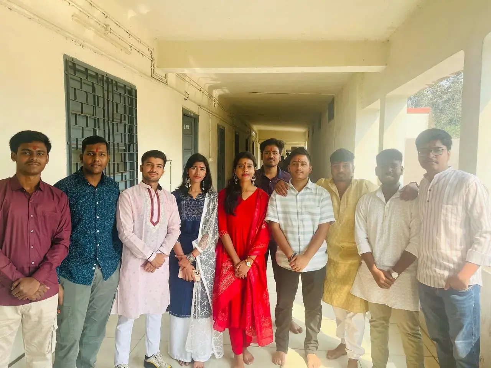
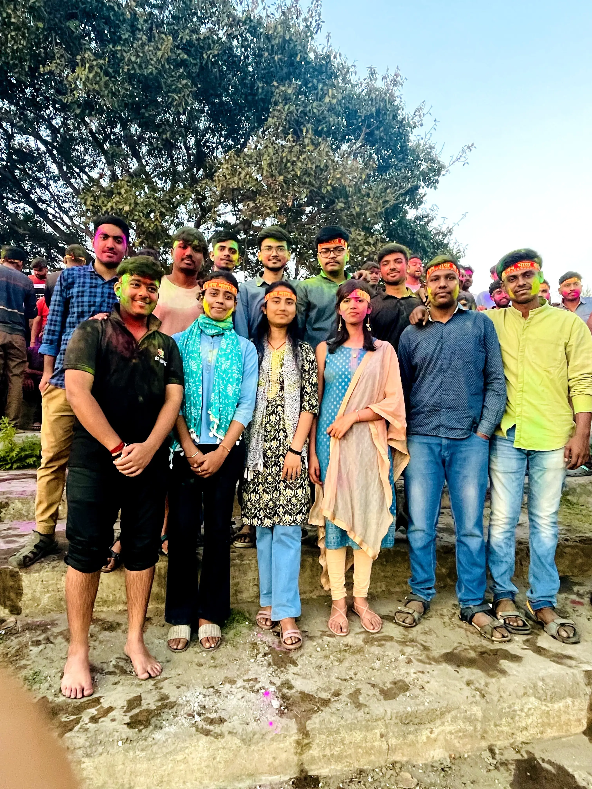
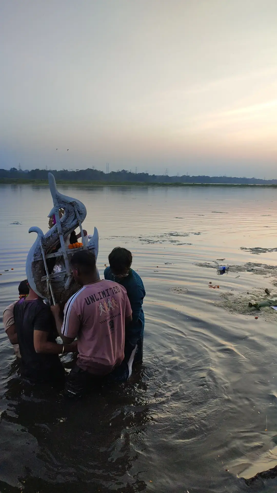

Saraswati Puja Celebration
The Mechanical Engineering Society (MES) of BIT Sindri celebrated Saraswati Puja with great devotion and enthusiasm on February 4th, 2025. This auspicious occasion brought together students, faculty members, and staff in a beautiful display of tradition and academic reverence.
Saraswati Puja, dedicated to the goddess of knowledge, wisdom, music, and arts, holds special significance in an educational institution. The MES organized the celebration with meticulous attention to detail



